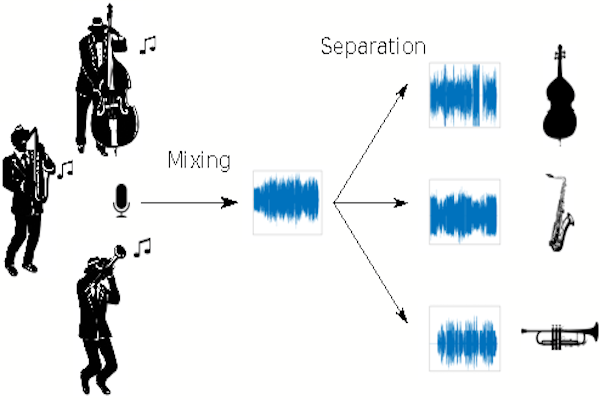

<div id="ajax-page" class="ajax-page-content">
    <div class="ajax-page-wrapper">
        <div class="ajax-page-nav">
            <div class="nav-item ajax-page-close-button">
                <a id="ajax-page-close-button" href="#"><i class="lnr lnr-cross"></i></a>
            </div>
        </div>

        <div class="ajax-page-title">
            <h1>Audio Source Separation</h1>
        </div>

        <div class="row">
            <div class="col-sm-7 col-md-7 portfolio-block">
                <div class="owl-carousel portfolio-page-carousel">
                    <div class="item">
                        
                    </div>
                </div>

                <!--
                <div class="portfolio-page-video embed-responsive embed-responsive-16by9">
                  <iframe class="embed-responsive-item" src="https://player.vimeo.com/video/97102654?autoplay=0"></iframe>
                </div>
                -->

                <!--
                <div class="portfolio-page-image">
                    
                </div>
                -->

                <script type="text/javascript">
                    jQuery(document).ready(function($){

                        $('.portfolio-page-carousel').owlCarousel({
                            smartSpeed:1200,
                            items: 1,
                            loop: true,
                            dots: true,
                            nav: true,
                            navText: false,
                            margin: 10
                        });

                    });
                </script>
            </div>

            <div class="col-sm-5 col-md-5 portfolio-block">
                <!-- Project Description -->
                <div class="project-description">
                    <div class="block-title">
                        <h3>Description</h3>
                    </div>
                    <ul class="project-general-info">
                        <li><p><i class="fa fa-user"></i> Dema Ushchapovskyy, Suraj Tirupati</p></li>
                        <li><p><i class="fa fa-calendar"></i> June, 2019</p></li>
                    </ul>

                    <p class="text-justify">Built a system which extracts vocal information from songs.</p>
                    <p class="text-justify">The approach used to solve this problem was to break the songs and vocals into
                        their frequency spectra by taking the short-time fourier transforms. We then trained CNN auto-encoders to obtain
                        the vocals frequency spectrum from the song spectrum.</p>
                    <p class="text-justify">Our biggest issue was obtaining the data, because we needed to find data
                         where the acapellas perfectly aligned its respective songs. After finding a dataset of about 100 songs, the final result achieved was 0.7db SNR on the vocal extracted.
                         The interesting observation was that the SNR per song was very dependant on the genre. Genres like pop where the songs are dominated by a loud and clear vocal achieved higher SNRs
                    then something like dance music where vocals were more in the background.</p>
                    <!-- /Project Description -->

                    <!-- Technology -->
                    <div class="tags-block">
                        <div class="block-title">
                            <h3>Technology</h3>
                        </div>
                        <ul class="tags">
                            <li><a>Python</a></li>
                            <li><a>Keras</a></li>
                            <li><a>MATLAB</a></li>
                        </ul>
                    </div>
                    <!-- /Technology -->

                    <!-- Share Buttons -->
                    <!-- /Share Buttons -->
                </div>
                <!-- Project Description -->
            </div>
        </div>
    </div>
</div>
